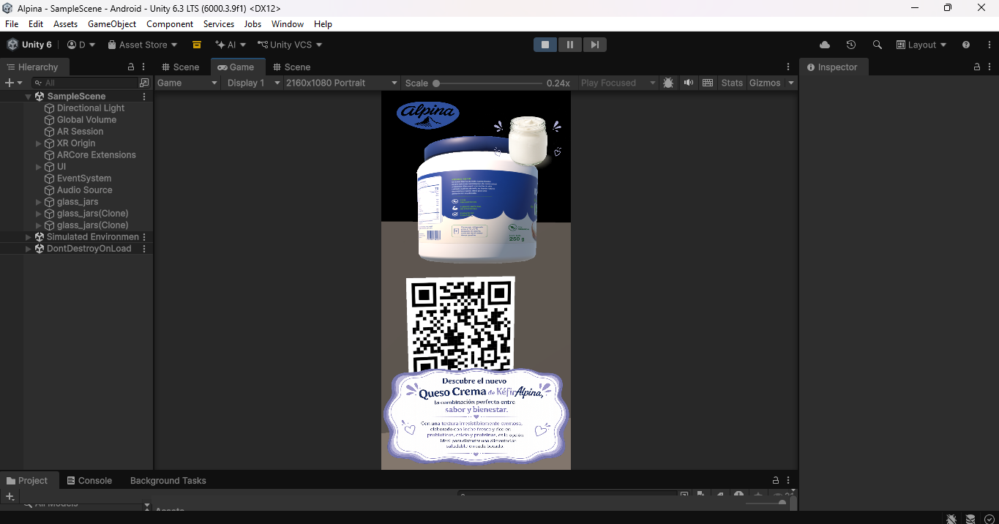
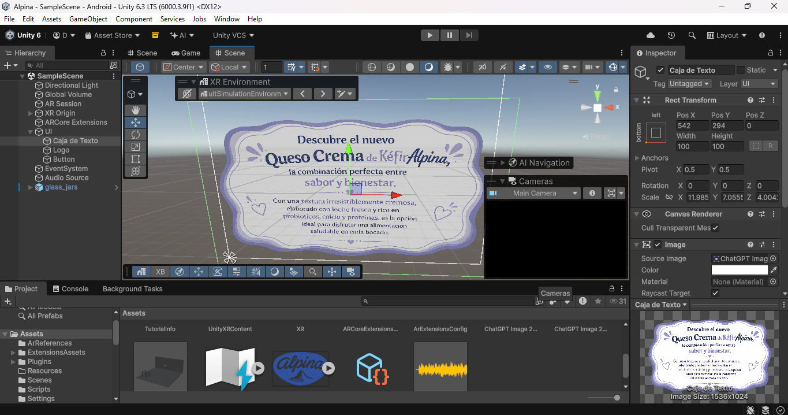

Proyecto de Realidad Aumentada: Queso Alpina
Publicado el por Dalia
Este proyecto consiste en una experiencia interactiva de realidad aumentada desarrollada con el motor gráfico Unity. El objetivo principal fue crear una estrategia de marketing digital que vinculara un producto físico (el queso crema Alpina) con una experiencia digital inmersiva, permitiendo al usuario interactuar con el producto de una forma totalmente nueva.
El funcionamiento inicia cuando el usuario escanea un código QR con la cámara de su dispositivo. Al detectar el marcador, el sistema activa el rastreo de imagen (Image Tracking) y superpone un modelo 3D realista del frasco de queso en el entorno real. La aplicación utiliza las capacidades de Unity para renderizar los gráficos 3D, manejar la iluminación y anclar el objeto a la superficie de forma estable.
La interacción va más allá de solo ver el objeto. Al tocar el frasco en la pantalla, se desencadenan eventos programados que reproducen una canción temática y despliegan una ficha informativa con los detalles y datos nutricionales del producto. Esto demuestra cómo la realidad aumentada puede enriquecer la experiencia de compra y proporcionar información adicional de manera atractiva y dinámica.
Video demostrativo
Capturas del proyecto


Características principales
- Reconocimiento de imagen y rastreo del código QR mediante la cámara.
- Renderizado 3D del producto con texturas y luces realistas en Unity.
- Interacción táctil: reproducción de audio y despliegue de información al tocar el modelo.
- Integración de elementos multimedia (audio, texto e imagen) en un solo entorno.
«La realidad aumentada no reemplaza la realidad, la enriquece con información y experiencias digitales.»
- Dalia Rojas